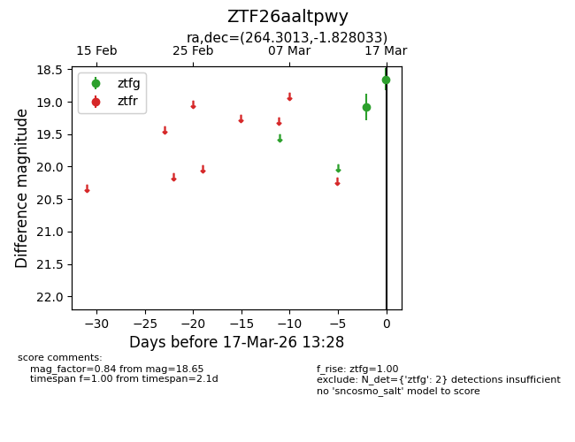
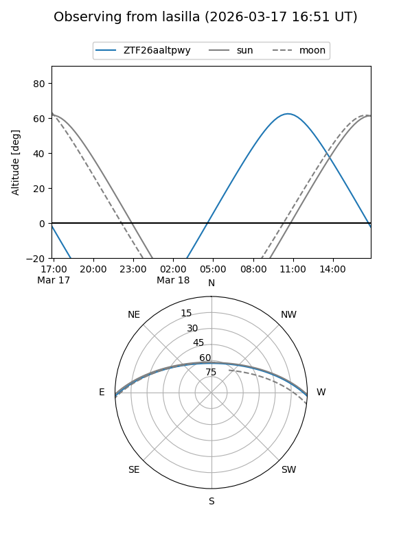
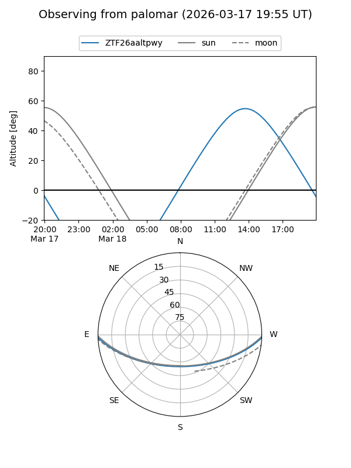

ZTF26aaltpwy
Target ZTF26aaltpwy at 2026-03-17 13:30
Aliases and brokers:
FINK: link
Lasair: link
ALeRCE: link
alt names
ZTF26aaltpwy (ztf,fink_ztf)
Coordinates:
equatorial (ra, dec) = 264.3013,-1.82803
equatorial (HMS+DMS) = 17:37:12.31,-01:49:40.92
galactic (l, b) = (22.5589,+15.57886)
Flags:
Photometry:
last ztfg=18.65
2 ztfg detections
Lightcurve

Visibility


Additional plots